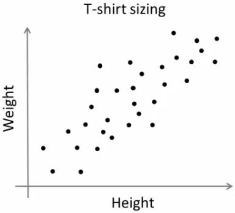

In this chapter, we will understand the concepts of K-Means Clustering, how it works etc.
We will deal this with an example which is commonly used.
Consider a company, which is going to release a new model of T-shirt to market. Obviously they will have to manufacture models in different sizes to satisfy people of all sizes. So the company make a data of people’s height and weight, and plot them on to a graph, as below:

Company can’t create t-shirts with all the sizes. Instead, they divide people to Small, Medium and Large, and manufacture only these 3 models which will fit into all the people. This grouping of people into three groups can be done by k-means clustering, and algorithm provides us best 3 sizes, which will satisfy all the people. And if it doesn’t, company can divide people to more groups, may be five, and so on. Check image below :
This algorithm is an iterative process. We will explain it step-by-step with the help of images.
Consider a set of data as below ( You can consider it as t-shirt problem). We need to cluster this data into two groups.
Step : 1 - Algorithm randomly chooses two centroids, and  (sometimes, any two data are taken as the centroids).
(sometimes, any two data are taken as the centroids).
Step : 2 - It calculates the distance from each point to both centroids. If a test data is more closer to , then that data is labelled with ‘0’. If it is closer to , then labelled as ‘1’ (If more centroids are there, labelled as ‘2’,‘3’ etc).
In our case, we will color all ‘0’ labelled with red, and ‘1’ labelled with blue. So we get following image after above operations.
Step : 3 - Next we calculate the average of all blue points and red points separately and that will be our new centroids. That is and shift to newly calculated centroids. (Remember, the images shown are not true values and not to true scale, it is just for demonstration only).
And again, perform step 2 with new centroids and label data to ‘0’ and ‘1’.
So we get result as below :
Now Step - 2 and Step - 3 are iterated until both centroids are converged to fixed points. (Or it may be stopped depending on the criteria we provide, like maximum number of iterations, or a specific accuracy is reached etc.) These points are such that sum of distances between test data and their corresponding centroids are minimum. Or simply, sum of distances between and is minimum.
Final result almost looks like below :
So this is just an intuitive understanding of K-Means Clustering. For more details and mathematical explanation, please read any standard machine learning textbooks or check links in additional resources. It is just a top layer of K-Means clustering. There are a lot of modifications to this algorithm like, how to choose the initial centroids, how to speed up the iteration process etc.